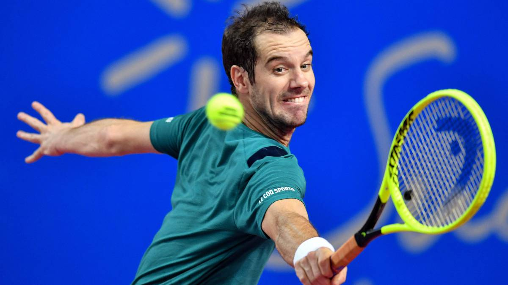
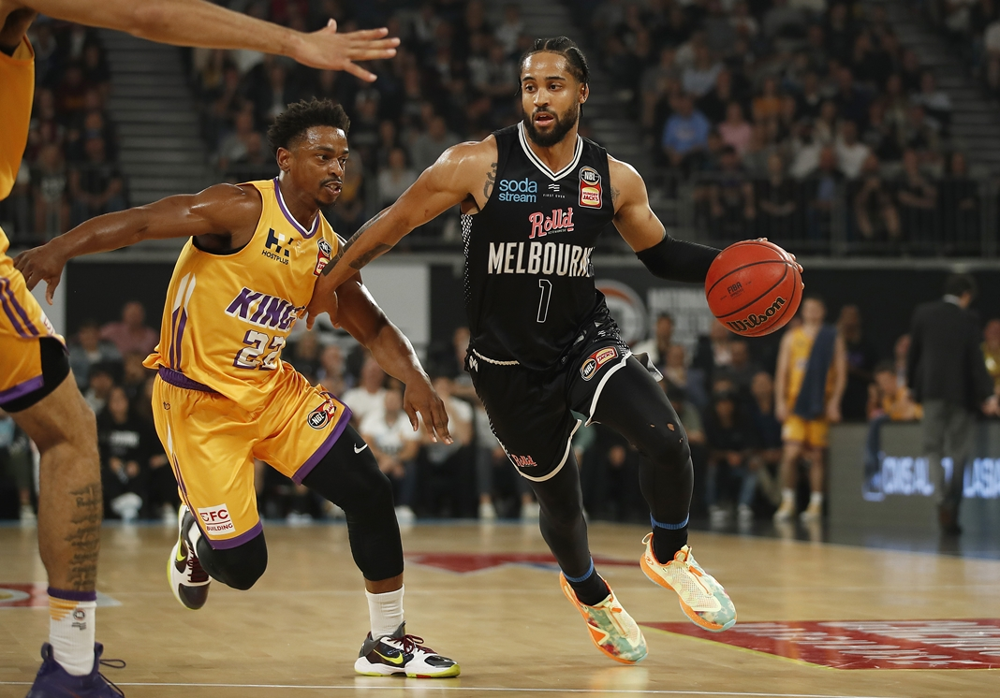

Futbol
El fútbol se define en primer lugar como un juego que incluye dos contrincantes y un árbitro con la capacidad de
imponer justicia imparcial. Cada contrincante está compuesto por un equipo de 11 jugadores en campo de juego cada
uno, con la opción de incluir jugadores suplentes en el transcurso del partido de fútbol.
El objetivo es hacer rodar un balón esférico con el fin de anotar un punto, cuya anotación es válida al cruzar la
línea límite del arco contrario. Cada punto logrado es conocido como gol, por lo tanto el equipo que más goles
sume en el transcurso de 90 minutos –tiempo neto de un partido- será el ganador.

Tenis
El tenis es un deporte que se practica con raquetas y una pequeña pelota. Pueden jugarlo dos individuos (uno
contra uno) o dos parejas (dos personas contra las otras dos). El objetivo es impactar la pelota para que pase por
encima de la red que divide la cancha a la mitad, intentando que el rival no consiga devolverla.
Se cree que el tenis surgió en el siglo XII en territorio francés. En aquellas primeras versiones del juego, la
pelota era impactada con las manos. A partir del siglo XVI, se empezaron a usar raquetas.

Basquet
El baloncesto, basquetbol o básquetbol (del inglés basketball; de basket, ‘canasta’, y ball, ‘pelota’), o
simplemente básquet, es un deporte de equipo que se puede desarrollar tanto en pista cubierta como en descubierta,
en el que dos conjuntos de cinco jugadores cada uno, intentan anotar puntos, también llamados canastas o dobles
y/o triples introduciendo un balón en un aro colocado a 3,05 metros del suelo del que cuelga una red, lo que le da
un aspecto de cesta o canasta.
Fue inventado por James Naismith profesor de la Universidad de Illinois (Massachusetts) y nació como una respuesta
a la necesidad de realizar alguna actividad deportiva durante el invierno, en la escuela de YMCA en Massachusetts.
James Naismith, (un profesor de educación física) le fue encargada la misión, en 1891, de idear un deporte que se
pudiera jugar bajo techo, pues los inviernos en esa zona dificultaban la realización de alguna actividad al aire
libre.
